Information Gathering and Vulnerability Scanning
3.0 Introduction
3.0.1 Why Should I Take This Module?
Protego is starting the pentests for the Pixel Paradise customer. In this information gathering phase, you will learn about and practice your skills by doing passive and active reconnaissance as a basis for exploitation of discovered vulnerabilities.

The first step a threat actor takes when planning an attack is to gather information about the target. This act of information gathering is known as reconnaissance. Attackers use scanning and enumeration tools along with public information available on the Internet to build a dossier about a target. As you can imagine, as a penetration tester, you must also replicate these methods to determine the exposure of the networks and systems you are trying to defend. This module begins with a discussion of what reconnaissance is in general and the difference between passive and active methods. You will briefly learn about some of the common tools and techniques used. From there, the module digs deeper into the process of vulnerability scanning and how scanning tools work, including how to analyze vulnerability scanner results to provide useful deliverables and explore the process of leveraging the gathered information in the exploitation phase. The module concludes with coverage of some of the common challenges to consider when performing vulnerability scans.
3.0.2 What Will I Learn in This Module?
Module Title: Information Gathering and Vulnerability Scanning
Module Objective: Perform information gathering and vulnerability scanning activities.
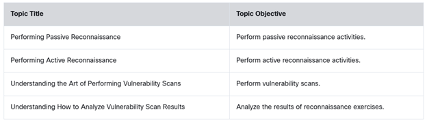
3.1 Performing Passive Reconnaissance
3.1.1 Overview
Before getting involved in researching Pixel Paradise, you need to improve your passive reconnaissance skills. In this module, you will participate in a series of learning activities that you can apply to your tasks in the Pixel Paradise penetration test.

Reconnaissance is always the initial step in a cyber attack. An attacker must first gather information about the target in order to be successful. In fact, the term reconnaissance is widely used in the military world to describe the gathering of information about the enemy, such as information about the enemy's location, capabilities, and movements. This type of information is needed to successfully perform an attack. Reconnaissance in a penetration testing engagement typically consists of scanning and enumeration. But what does reconnaissance look like from an attacker's perspective?
"If you know the enemy and know yourself, you need not fear the result of a hundred battles. If you know
yourself but not the enemy, for every victory gained you will also suffer a defeat. If you know neither the
enemy nor yourself, you will succumb in every battle."
― Sun Tzu, The Art of War
3.1.2 Active Reconnaissance vs. Passive Reconnaissance
Active reconnaissance is a method of information gathering in which the tools used actually send out probes to the target network or systems in order to elicit responses that are then used to determine the posture of the network or system. These probes can use various protocols and multiple levels of aggressiveness, typically based on what is being scanned and when. For example, you might be scanning a device such as a printer that does not have a very robust TCP/IP stack or network hardware. By sending active probes, you might crash such a device. Most modern devices do not have this problem; however, it is possible, so when doing active scanning, you should be conscious of this and adjust your scanner settings accordingly.
Passive reconnaissance is a method of information gathering in which the tools do not interact directly with the target device or network. There are multiple methods of passive reconnaissance. Some involve using third-party databases to gather information. Others also use tools in such a way that they will not be detected by the target. These tools, in particular, work by simply listening to the traffic on the network and using intelligence to deduce information about the device communication on the network. This approach is much less invasive on a network, and it is highly unlikely for this type of reconnaissance to crash a system such as a printer. Because it does not produce any traffic, it is also unlikely to be detected and does not raise any flags on the network that it is surveying. Another scenario in which a passive scanner would come in handy would be for a penetration tester who needs to perform analysis on a production network that cannot be disrupted. The passive reconnaissance technique that you use depends on the type of information that you wish to obtain. One of the most important aspects of learning about penetration testing is developing a good methodology that will help you select the appropriate tools and technologies to use during the engagement.
Common active reconnaissance tools and methods include the following:
- Host enumeration
- Network enumeration
- User enumeration
- Group enumeration
- Network share enumeration
- Web page enumeration
- Application enumeration
- Service enumeration
- Packet crafting
Common passive reconnaissance tools and methods include the following:
- Domain enumeration
- Packet inspection
- Open-source intelligence (OSINT)
- Recon-ng
- Eavesdropping
3.1.3 Practice — Active Reconnaissance vs. Passive Reconnaissance
Which three reconnaissance tools or methods are considered active reconnaissance? (Choose three.)
Which three reconnaissance tools or methods are considered passive reconnaissance? (Choose three.)
3.1.4 Lab — Using OSINT Tools

Open source information is a valuable resource for learning about organizations, their networks, and their employees. Here at Protego, we really like SpiderFoot and Recon-ng. Use this learning lab to get familiar with OSINT in general and these tools in particular.
I think you will enjoy exploring these resources. It is fun to play detective when doing reconnaissance of a client organization.
Explore several OSINT tools commonly used by penetration testers, including SpiderFoot and Recon-ng.
- Examine OSINT resources
- Use SpiderFoot
- Investigate Recon-ng
- Find interesting files with Recon-ng
You are planning to use SpiderFoot to discover details about the Pixel Paradise domain as part of the reconnaissance effort. Which SpiderFoot use case should be used so that Pixel Paradise security staff will not be aware of your activities?
3.1.5 DNS Lookups
Suppose, for example, that an attacker has a target, h4cker.org, in its sights. h4cker.org has an Internet presence, as most companies do. This presence is a website hosted at www.h4cker.org. Just as a home burglar would need to determine which entry and exit points exist in a home before he could commit a robbery, a cyber attacker needs to determine which of the target's ports and protocols are exposed to the Internet. A burglar might take a walk around the outside of the house, looking for doors and windows, and then possibly take a look at the locks on the doors to determine their weaknesses. Similarly, a cyber attacker would perform tasks like scanning and enumeration.
Typically, an attacker would start with a small amount of information and gather more information while scanning, eventually moving on to performing different types of scans and gathering additional information. For instance, the attacker targeting h4cker.org might start by using DNS lookups to determine the IP address or addresses used by h4cker.org and any other subdomains that might be in use. Let's say that those queries reveal that h4cker.org is using the IP addresses 185.199.108.153 for www.h4cker.org, 185.199.110.153 for mail.h4cker.org, and 185.199.110.153 for portal.h4cker.org. Example 3-1 shows an example of the DNSRecon tool in Kali Linux being used to query the DNS records for h4cker.org.
Example 3-1 — DNSRecon Example
From there, an attacker can begin to dig deeper by scanning the identified hosts. Once the attacker knows which hosts are alive on the target site, he or she then needs to determine what kind of services the hosts are running. To do this, the attacker might use the tried-and-true Nmap tool. Before we discuss this tool and others in depth, we need to look at the types of scans and enumerations you should perform and why. Nmap was once considered a simple port scanner; however, it has evolved into a much more robust tool that can provide additional functionality, thanks to the Nmap Scripting Engine (NSE).
Module 10, "Tools and Code Analysis," provides details about a variety of tools that can be used to perform reconnaissance and other aspects of the pen testing methodology. Many of these tools are already installed in the VM you downloaded for this course. However, you can also download your own penetration testing Linux distribution such as Kali Linux (kali.org) or Parrot OS (parrotsec.org) and set up the WebSploit Labs (https://websploit.org) learning environment.

You can use other basic DNS tools, such as the nslookup, host, and dig Linux commands, to perform name resolution and obtain additional information about a domain. Example 3-2 shows how the Dig tool is used to show the DNS resolution details for h4cker.org.
Example 3-2 — Using Dig to Obtain Information About a Given Domain
The highlighted lines show the IP addresses associated with h4cker.org. Similarly, you can use the dig <domain> mx command to obtain the email servers used by h4cker.org (mail exchanger [MX] record), as demonstrated in Example 3-3.
Example 3-3 — Obtaining the MX Record of h4cker.org
3.1.6 Practice — DNS Lookups
A user enters the command dig h4kerone.org mx on a Linux host. What is the
purpose of using this command?
3.1.7 Identification of Technical and Administrative Contacts
You can easily identify domain technical and administrative contacts by using the Whois tool. Many organizations keep their registration details private and instead use the domain registrar organization contacts. For instance, let's look at the technical and administrative contacts of h4cker.org (shown in Example 3-4). Omar Santos owns the h4cker.org domain; however, the technical and administrative details are private. Only the abuse contact email and phone number from Google (the domain registrar) are displayed.
Example 3-4 — Whois Information for the Domain h4cker.org
Now let's look at the Whois details for tesla.com, shown in Example 3-5.
Example 3-5 — Whois Information for the Domain tesla.com
The highlighted lines in Example 3-5 show the technical and administrative contacts for the domain (which are also the ones for the domain registrar [MarkMonitor]). Example 3-6 shows another example; this example shows the technical and administrative email contacts for the domain cisco.com.
Example 3-6 — Showing Technical and Administrative Email Contacts
In Example 3-6, the technical and administrative contacts are pointing to the InfoSec team at Cisco (infosec@cisco.com) instead of to the registrant.
Various tools, such as Recon-ng, the Harvester, and Maltego, help automate the process of passive reconnaissance and support many DNS-based and Whois queries. Several of these tools are covered in Module 10 and are listed in Omar Santos' GitHub repository at href="https://github.com/The-Art-of-Hacking/h4cker/tree/master/osint" target="_blank">https://github.com/The-Art-of-Hacking/h4cker/tree/master/osint.
3.1.8 Practice — Identification of Technical and Administrative Contacts
Which command can identify the technical and administrative contacts for the domain
h4cker.org?
3.1.9 Lab — DNS Lookups
We need to learn about Pixel Paradise's attack surface. One way to do this is to find all of the domains and subdomains that belong to Pixel Paradise that are registered in the DNS. Each subdomain can then be investigated further for vulnerabilities and exposures to attacks.
Practice your skills with DNS investigation tools before we start our reconnaissance of Pixel Paradise.
Explore common tools used to gather information about a target through the Domain Name System (DNS).
- Use nslookup to obtain domain and IP address information
- Use the whois command to find additional registration information
- Compare the output of the Nslookup and Dig tools
- Perform reverse DNS lookups
You need to do a DNS reverse lookup on an IP address that you uncovered during an
investigation. Which option will tell dig to return the domain name and record type for the IP
address?
3.1.10 Cloud vs. Self-Hosted Applications and Related Subdomains
A company can own a domain and related subdomain, but its applications might be hosted in the cloud. For example, Netflix (at the time of writing) owns the domain netflix.com, which resolves to IPv4 addresses 3.230.129.93, 52.3.144.142, and 54.237.226.164 (as demonstrated in Example 3-7 with the Linux host command).
Example 3-7 — DNS Name Resolution for netflix.com
However, the IPv4 addresses 3.230.129.93, 52.3.144.142, and 54.237.226.164 are owned by Amazon Web Services (AWS), which hosts Netflix.com, as demonstrated in Example 3-8.
Example 3-8 — Ownership of IP Addresses and Applications Hosted in the Cloud
In Example 3-8, the whois command is used to retrieve the organization name (OrgName) of the owner for each of the IP addresses 3.230.129.93, 52.3.144.142, and 54.237.226.164.
3.1.11 Social Media Scraping
Attackers can easily gather valuable information about victims by scraping social media sites such as Twitter, LinkedIn, Facebook, and Instagram. People post too many things online. They publicly talk about their hobbies, the restaurants they visit, what they do for work, work promotions, where they travel for business and pleasure, and much more.
Often attackers use other information such as key contacts (company stakeholders) and their job responsibilities. Attackers can use all that information to perform different types of social engineering attacks (including spear phishing and whaling). You will learn details about social engineering attacks in Module 4, "Social Engineering Attacks."
Attackers often leverage job listings in websites like Indeed, LinkedIn, CareerBuilder, and individual company websites to obtain information about the technologies these companies use (for example, the technology stack of an organization). Let's say a company is looking for a Cisco firewall administrator, an Ansible expert, and a Mongo database architect in Raleigh, North Carolina. The attacker didn't have to launch any tools to learn that the company is using Cisco firewalls, MongoDB, and Ansible for automation in its Raleigh office.
Similarly, attackers have also created job posts to attract people to apply for those positions. Then they interview their victims to try to get them to talk about what they do at work and the technologies used by their employer. Think about it: When people are trying to get a job, they want to "show off" and often reveal too much information about the technologies, architectures, and applications that they use in their current roles.
3.1.12 Lab — Employee Intelligence Gathering
Personnel are considered to be the weakest link in network security. For example, people are willing to expose a surprising amount of information about themselves on social media. This information can be used by attackers in various ways. It can help them to find information about a user including possible usernames, likely passwords, and information that can be used to launch successful social engineering attacks. Information gathered from social media can be used in successful pretexts that can lead people to do dangerous things.
For this reason it is important that we know as much as we can about key personnel at Pixel Paradise. Identifying potential security risks that are caused by information in social media profiles and posts is part of our pentesting agreement with our client. Get familiar with some of the ways that social media posts can be used by threat actors by doing this lab.
Use social media to collect personal identifiable information (PII) and assess how exposed key personnel information may be to threat actors.
Open Lab →3.1.13 Cryptographic Flaws
During the reconnaissance phase, attackers often can inspect Secure Sockets Layer (SSL) certificates to obtain information about the organization, potential cryptographic flaws, and weak implementations. You can find a lot inside digital certificates: the certificate serial number, the subject common name, the uniform resource identifier (URI) of the server it was assigned to, the organization name, Online Certificate Status Protocol (OCSP) information, the certificate revocation list (CRL) URI, and so on.
Certificate revocation is the act of invalidating a digital certificate. For instance, if an application has been decommissioned or the certificate assigned to such application is compromised, you should revoke the certificate and add its serial number to a CRL. OCSP and CRLs are used to verify whether a certificate has been revoked (that is, invalidated) by the issuing authority.
Figure 3-1 shows the digital certificate assigned to h4cker.org. The certificate shows the organization that issued the certificate — in this case, Let's Encrypt (letsencrypt.org) — the serial number, validity period, and public key information, including the algorithm, key size, and so on. Attackers can use this information to reveal any weak cryptographic configuration or implementation.
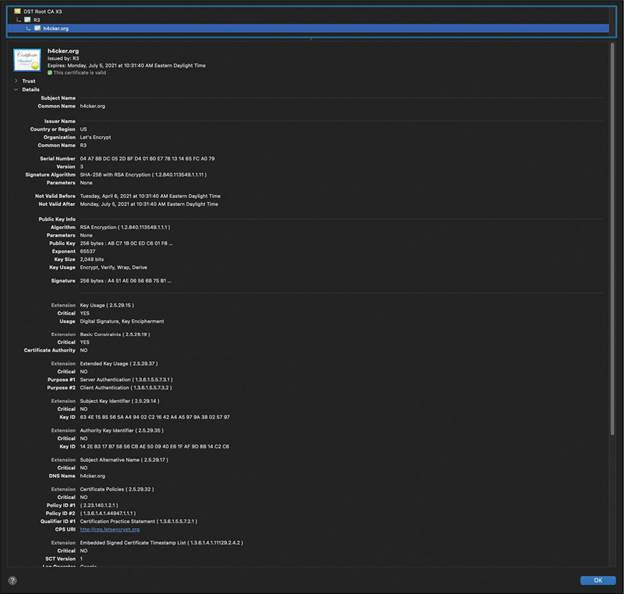
Attackers can also leverage certificate transparency to reveal additional information and enumerate subdomains. More than a decade ago, there was a major attack against DigiNotar (an organization that creates, maintains, and authorizes digital certificates for many companies and government institutions). This attack (along with other similar attacks) raised concerns around organizations that generate and manage digital certificates. Subsequently, certificate transparency was created to better detect the issuing of malicious certificates. The goal of certificate transparency is for any organization or individual to be able to "transparently" verify the issuance of a digital certificate. Certificate transparency allows certificate authorities (CAs) to provide details about all certificates that have been issued for a given domain and organization. Attackers can also use this information to reveal what other subdomains and systems an organization may own.
You can obtain detailed information about certificate transparency from href="https://certificate.transparency.dev/" target="_blank">https://certificate.transparency.dev.
Tools such as crt.sh enable you to obtain detailed certificate transparency information about any given domain.
Figure 3-2 shows the result of the query https://crt.sh/?q=h4cker.org for the domain h4cker.org. You
can see in the search results multiple subdomains that were not known to the attacker before.
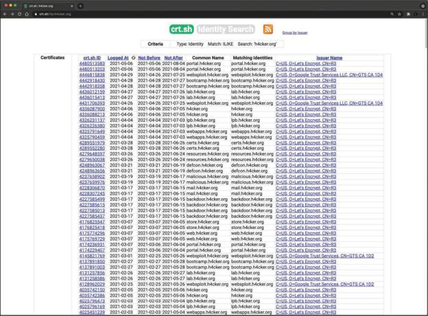
3.1.14 Lab — Finding Information from SSL Certificates
SSL certificates are an essential part of online security. They are used to both encrypt data as it is transmitted and establish that a website can be trusted as a source or destination for data. It is important to understand the identification and encryption information that is available in SSL certificates.
Do this lab to get familiar with SSL certificates and the information that they contain. This is an important part of our engagement with Pixel Paradise.
View and analyze SSL certificate information using Kali Linux tools.
- View certificate information on hosts
- Access detailed certificate information
- Use SSL analysis tools in Kali
- Use Kali tools to gather certificate information
Which Kali SSL reconnaissance tool queries SSL services to determine what ciphers are supported?
3.1.15 Company Reputation and Security Posture
Security breaches can have a direct impact on a company's reputation. Attackers can leverage information from past security breaches that an organization might have experienced. They may, for example, leverage the following data while trying to gather information about their victims:
- Password dumps
- File metadata
- Strategic search engine analysis/enumeration
- Website archiving/caching
- Public source code repositories
Password Dumps
Attackers can leverage password dumps from previous breaches. There are a number of ways that an attacker can get access to such password dumps, such as by using Pastebin, dark web websites, and even GitHub in some cases. Several different tools and websites make this task very easy. An example of a tool that allows you to find email addresses and passwords exposed in previous breaches is h8mail. You can install h8mail by using the pip3 install h8mail command, as demonstrated in Example 3-9. Example 3-9 also shows the h8mail command-line usage.
Example 3-9 — Installing and Using h8mail
The following are additional tools that allow you to search for breach data dumps:
- WhatBreach: https://github.com/Ekultek/WhatBreach
- LeakLooker: https://github.com/woj-ciech/LeakLooker
- Buster: https://github.com/sham00n/buster
- Scavenger: https://github.com/rndinfosecguy/Scavenger
- PwnDB: https://github.com/davidtavarez/pwndb
Tools like h8mail and WhatBreach take advantage of breached data repositories of websites such as haveibeenpwned.com and snusbase.com. Historically, websites such as weleakinfo.com (seized by the FBI) have been used by criminals to dump information from past security breaches.
File Metadata
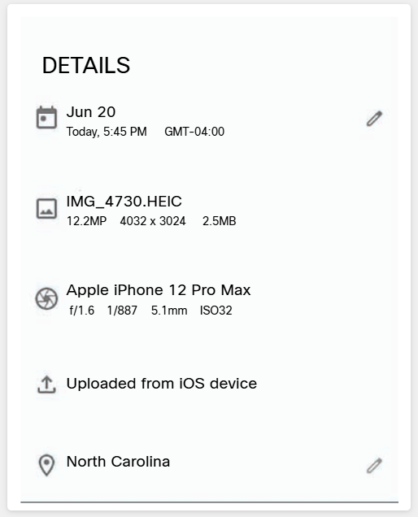
You can obtain a lot of information from metadata in files such as images, Microsoft Word documents, Excel files, PowerPoint files, and more. For instance, Exchangeable Image File Format (Exif) is a specification that defines the formats for images, sound, and supplementary tags used by digital cameras, mobile phones, scanners, and other systems that process image and sound files. Figure 3-3 shows the Exif data of a digital image captured by an iPhone.
Several tools can show Exif details. One of the most popular of them, ExifTool, is demonstrated in Example 3-10. This example shows the Exif metadata details of the same image whose details are shown in Figure 3-3.
Example 3-10 — Using ExifTool
Strategic Search Engine Analysis/Enumeration
Most of us use search engines such as DuckDuckGo, Bing, and Google to locate information. What you might not know is that search engines, such as Google, can perform much more powerful searches than most people ever dream of. Google can translate documents, perform news searches, and do image searches. In addition, hackers and attackers can use it to do something that has been termed Google hacking.
By using basic search techniques combined with advanced operators, both you and attackers can use Google as a powerful vulnerability search tool. The following are some advanced operators:
- Filetype: Directs Google to search only within the text of a particular type of file (for
example,
filetype:xls) - Inurl: Directs Google to search only within the specified URL of a document (for example,
inurl:search-text) - Link: Directs Google to search within hyperlinks for a specific term (for example,
link:www.domain.com) - Intitle: Directs Google to search for a term within the title of a document (for example,
intitle:"Index of /etc")
By using these advanced operators in combination with key terms, both you and attackers can get Google to uncover many pieces of sensitive information that shouldn't be revealed. These search strings are often called Google dorks.
To see how Google dorking works, enter the following phrase into Google:
This query searches in a URL for the session IDs that could be used to potentially impersonate users. It's not unusual for this search to find more than 100 sites that store sensitive session IDs in logs that were publicly accessible. If these IDs have not timed out, they could be used to gain access to restricted resources.
You can use advanced operators to search for many types of data. The following is another example of a Google search string (or Google dork) that can reveal passwords of web applications:
Now that we have discussed some basic Google search techniques, let's look at advanced Google hacking. We recommend that you visit the Google Hacking Database (GHDB) repositories at href="https://www.exploit-db.com/google-hacking-database/" target="_blank">https://www.exploit-db.com/google-hacking-database/. GHDB has the following search categories:
- Footholds
- Files containing usernames
- Sensitive directories
- Web server detection
- Vulnerable files
- Vulnerable servers
- Error messages
- Files containing juicy info
- Files containing passwords
- Sensitive online shopping info
- Network or vulnerability data
- Pages containing login portals
- Various online devices
- Advisories and vulnerabilities
GHDB is a community effort. Anyone can upload a new Google dork to perform these types of searches. Once you start playing with the dorks in GHDB, you will be surprised by the unbelievable things found through Google hacking. GHDB has made using Google dorks very easy, and there are other options as well. Later in this module, you will learn about additional tools that can be used to perform similar searches (such as Recon-ng).
Website Archiving/Caching
Several organizations archive and cache website data on the Internet. One of the most popular repositories is the "Wayback Machine" of Internet Archive (https://archive.org/web).
The Wayback Machine allows you to go back in time on the Internet. For example, Figure 3-4 shows what Cisco's
website looked like on November 3, 1999. You can access the archive of the site shown in Figure 3-4 by copying
the following link into your browser address bar:
https://web.archive.org/web/19991103121048/http://www.cisco.com/.
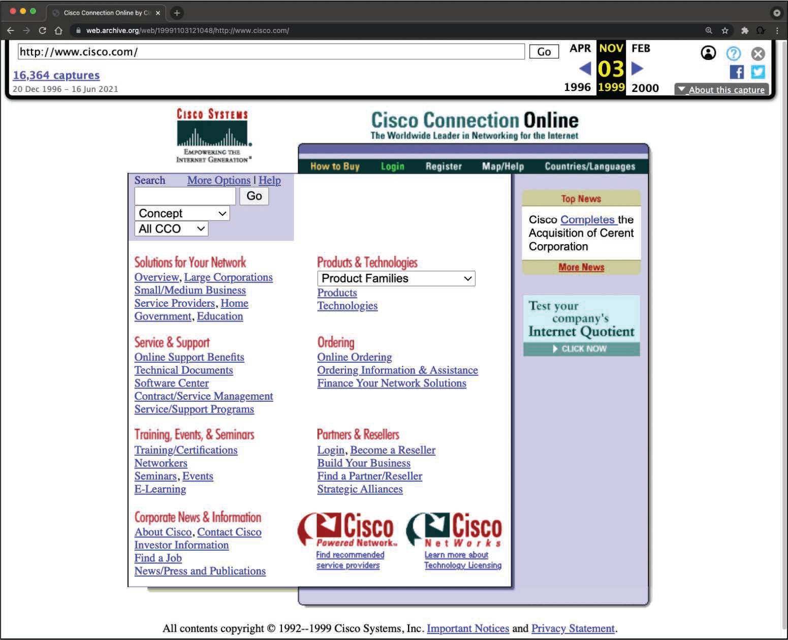
Public Source Code Repositories
An attacker can obtain extremely valuable information from public source code repositories such as GitHub and GitLab. Most of the applications and products we consume today use open-source software that is freely available in these public repositories. Attackers can find vulnerabilities in those software packages and use them to their advantage. Similarly, as a penetration tester, you can obtain valuable information from these public repositories. Even if you do not immediately find security vulnerabilities in the code, these repositories can give you insights into the architecture and underlying code used in the organization's applications and infrastructure.
3.1.16 Practice — File Metadata
An attacker downloaded the file ourmission.jpg from a government office
website. The attacker then issued the command exiftool ourmission.jpg on the workstation. What is
the purpose of this operation?
3.1.17 Practice — Web Archiving, Caching, and Public Code Repositories
A cybersecurity professional is helping the XYZ corporation to perform vulnerability assessments of the web services. The professional performed a Google search with the following string:
Which term describes the part
intext:JSESSIONID OR intext:PHPSESSID inurl:access.log ext:log?
3.1.18 Lab — Finding Out About the Organization
Part of our engagement with Pixel Paradise involves uncovering whether sensitive information has been leaked that could be available from stolen information brokers on the dark web. Enormous data breaches have resulted in millions of records containing personally identifiable information being made available to cybercriminals. Employees could use their company email addresses to register with companies that have later been breached. Some employees could even use their work account username and password to register.
We need to see if data breaches have resulted in cybersecurity vulnerabilities at Pixel Paradise. We can use these vulnerabilities later in our penetration test, and we will certainly inform our customer about the vulnerabilities and provide strategies to mitigate them.
Find information about email breaches and view file metadata to assess organizational exposure from data leaks.
- Find information about email breaches
- View file metadata
What types of files will ExifTool read metadata from? (Choose three.)
3.1.19 Lab — Advanced Searches
As you know, open-source intelligence can yield a lot of information about people. It can also reveal a lot of information about web systems, services, and applications. Simple tools can yield valuable results. Brush up your skills with advanced Google searches and the Wayback Machine web archive by doing this lab.
Later, we will use these tools with Pixel Paradise to uncover useful information that we can utilize in the later phases of our penetration test.
Use Google Advanced Search to perform passive reconnaissance including dorking, the Google Hacking Database, and the Wayback Machine.
- Part 1: Google Advanced Searches (Dorking)
- Part 2: The Google Hacking Database
- Part 3: The Wayback Machine
Which statements are true regarding this Google dork? (Choose three.)
3.1.20 Open-Source Intelligence (OSINT) Gathering
Open-source intelligence (OSINT) gathering is a method of gathering publicly available intelligence sources to collect and analyze information about a target. OSINT is "open source" because collecting the information does not require any type of covert methods. Typically, the information can be found on the Internet. The larger the online presence of the target, the more information that will be available. This type of collection can often start with a simple Google search, which can reveal a significant amount of information about a target. It will at least give you enough information to know what direction to go with your information-gathering process. Let's cover two tools that can be used for OSINT gathering: Recon-ng and Shodan.
Recon-ng
This module covers a number of individual sources and tools used for information gathering. These tools are all very effective for their specific uses; however, wouldn't it be great if there were a tool that could pull together all these different functions? This is where Recon-ng comes in. It is a framework developed by Tim Tomes of Black Hills Information Security. This tool was developed in Python with Metasploit msfconsole in mind. If you have used the Metasploit console before, Recon-ng should be familiar and easy to understand.
Recon-ng is a modular framework, which makes it easy to develop and integrate new functionality. It is highly effective in social networking site enumeration because of its use of application programming interfaces (APIs) to gather information. It also includes a reporting feature that allows you to export data in different report formats. Because you will always need to provide some kind of deliverable in any testing you do, Recon-ng is especially valuable.
Step 1: Start Recon-ng
To start using Recon-ng, you simply run recon-ng from a new terminal window. Example 3-11 shows the command and the initial menu that Recon-ng starts with.
Example 3-11 — Starting Recon-ng
Step 2: View available commands
To get an idea of what commands are available in the Recon-ng command-line tool, you can simply type help and press Enter. Example 3-12 shows the output of the help command.
Example 3-12 — Recon-ng help Command
Step 3: Search for available modules
Before you can start gathering information using the Recon-ng tool, you need to understand what modules are available. Recon-ng comes with a "marketplace," where you can search for available modules to be installed. You can use the marketplace search command to search for all the available modules in Recon-ng, as demonstrated in Example 3-13.
Scroll the output in Example 3-13 to the right to see the D and K columns. The letter D indicates that the module has dependencies. The letter K indicates that an API key is needed in order to use the resources used in a particular module.
Example 3-13 — The Recon-ng Marketplace Search
Step 4: Refresh the marketplace
You can refresh the data about the available modules by using the marketplace refresh command, as shown in Example 3-14.
Example 3-14 — Refreshing the Recon-ng Marketplace Data
Step 5: Search the marketplace
Let's perform a quick search to find different subdomains of h4cker.org. We can use the module bing_domain_web to try to find any subdomains leveraging the Bing search engine. You can perform a keyword search for any modules by using the command marketplace search <keyword>, as demonstrated in Example 3-15.
Example 3-15 — Marketplace Keyword Search
Step 6: Install a module
Several results matched the bing keyword. The one that we are interested in is
recon/domains-hosts/bing_domain_web. You can install the module by using the marketplace
install command, as shown in Example 3-16.
Example 3-16 — Installing a Recon-ng Module
Step 7: Show installed modules
You can use the modules search command (as shown in Example 3-17) to show all the modules that have been installed in Recon-ng.
Example 3-17 — Recon-ng Installed Modules
Step 8: Load a module
To load the module that you would like to use, use the modules load command. In Example 3-18, the bing_domain_web module is loaded. Notice that the prompt changed to include the name of the loaded module. After the module is loaded, you can display the module options by using the info command.
Example 3-18 — Loading an Installed Module in Recon-ng
Step 9: Change the source and run
You can change the source (the domain to be used to find its subdomains) by using the command options set SOURCE, as demonstrated in Example 3-19. After the source domain is set, you can type run to run the query. The output shows that four subdomains were found using the bing_domain_web module.
Example 3-19 — Setting the Source Domain and Running the Query
Recon-ng is incredibly powerful because it uses the APIs of various OSINT resources to gather information. Its modules can query sites such as Facebook, Indeed, Flickr, Instagram, Shodan, LinkedIn, and YouTube.
You can also combine other modules to find additional information about a specific target. For example, you can
use the recon/domains-hosts/brute_hosts module to use wordlists and perform DNS queries to find
additional subdomains. Hacking is all about the process of thinking like an attacker and developing a good
methodology. I strongly recommend that you "go beyond the tool" and default behavior and develop your own
methodology by combining tools and other resources to find information and potential vulnerabilities to exploit.
Shodan
Shodan is an organization that scans the Internet 24 hours a day, 365 days a year. The results of those scans are stored in a database that can be queried at shodan.io or by using an API. You can use Shodan to query for vulnerable hosts, Internet of Things (IoT) devices, and many other systems that should not be exposed or connected to the public Internet. Figure 3-5 shows different categories of systems found by Shodan scans, including industrial control systems (ICS), databases, network infrastructure devices, and video games.
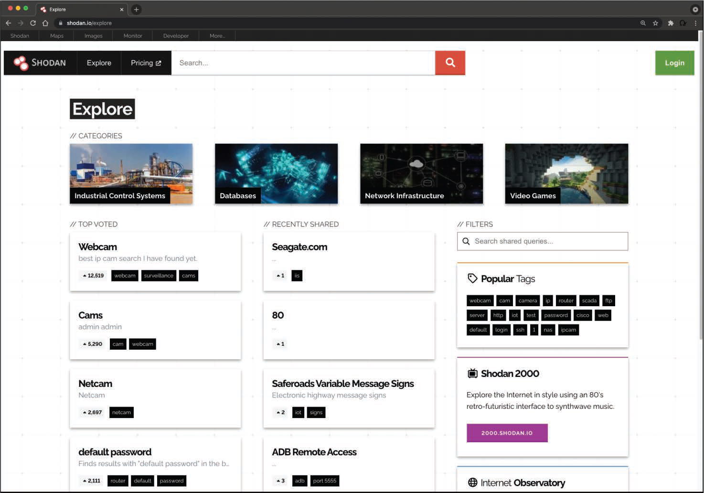
Figure 3-6 shows a query performed to find network infrastructure devices that are running a broken protocol called Cisco Smart Install. Attackers have leveraged this protocol for years to compromise different infrastructures. Cisco removed this protocol from its systems many years ago. However, many people are still using it in devices connected to the public Internet.
Cisco has warned customers for many years about the misuse of this feature in an informational security advisory that can be accessed at href="https://tools.cisco.com/security/center/content/CiscoSecurityAdvisory/cisco-sa-20170214-smi" target="_blank">https://tools.cisco.com/security/center/content/CiscoSecurityAdvisory/cisco-sa-20170214-smi.
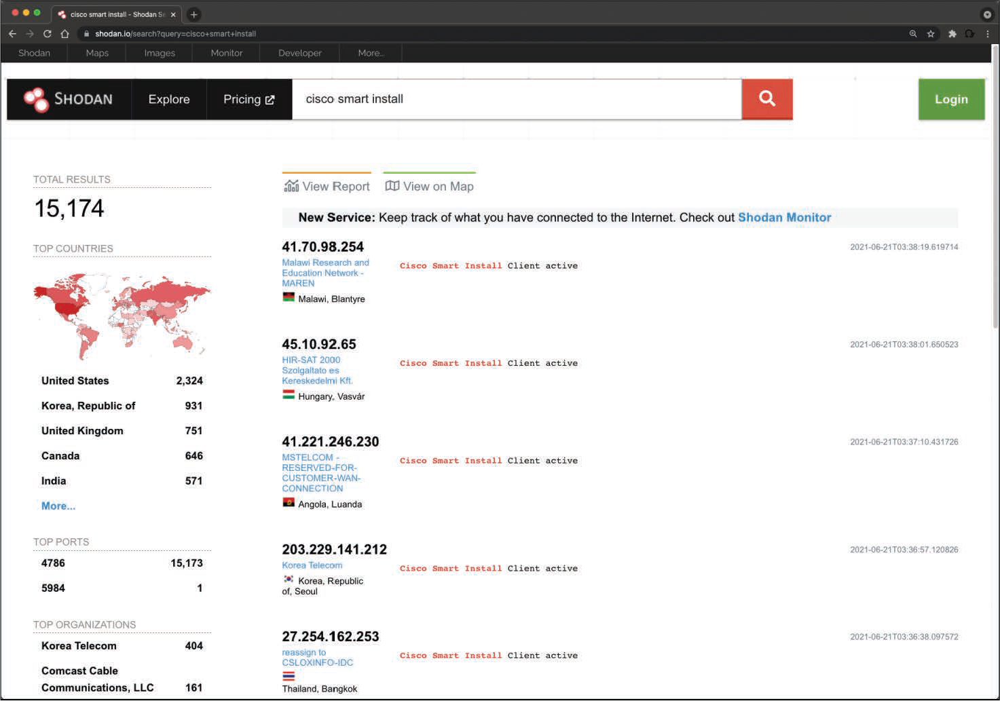
Keep in mind that even though this is public information, you should not interact with any systems shown in Shodan results without permission from the owner. If the owner has a bug bounty program, you may get recognition and a reward for finding the affected system. A bug bounty is a program designed to reward security researchers and ethical hackers for finding vulnerabilities in a product, an application, or a system. In most cases, the compensation is monetary. Omar Santos has included several resources in his GitHub repository on how to get started in bug bounties; see https://github.com/The-Art-of-Hacking/h4cker/tree/master/bug-bounties.
3.1.21 Lab — Shodan Searches
Shodan is an amazing tool if used correctly. It can uncover serious vulnerabilities in services running on internet-connected servers from around the world. However, in order for it to yield useful results, you need to understand how it works and the search filters to use to get the information that you want.
Here at Protego, we use it to scan the domains and subdomains that we uncovered with other tools. We also scan blocks of addresses that we think are under the control of our target. Shodan is based on a fairly simple mechanism that can reveal a lot of valuable information about applications and services that are running on target machines.
You should get familiar with Shodan searches and filters by doing this lab. Then, take some time to investigate example Shodan searches to learn more about what terms you can search on to identify different types of potentially vulnerable services.
Use Shodan to search for vulnerable IoT devices and internet-exposed services.
- Create a Shodan user account and register for an API key
- Use the Shodan website to search for vulnerable IoT devices
- Use Shodan from the CLI to perform a search
Which statement is true regarding a Shodan search on the term "webcam"?
3.2 Performing Active Reconnaissance
3.2.1 Overview
As part of the PenTesting information gathering process, you will participate in active reconnaissance of the Pixel Paradise internal network. Here is what we know about the network so far.
The Pixel Paradise network includes the following:
- User endpoints: Desktops, laptops, mobile devices, and gaming consoles used by employees.
- Facilities-related endpoints: Surveillance cameras, an alarm system, climate control sensors and actuators, lighting control systems, and VoIP systems.
- Intermediary devices: Routers and switches that connect endpoints and other networks.
- Wireless Access Points: Devices that provide Wi-Fi access to employees.
- Firewalls: Devices that protect the network from external threats and unauthorized access.
- Servers: On-premises servers that provide file storage, database access, and other services such as email.
- Cloud Infrastructure: Amazon Web Services
As mentioned earlier in this module, with each step of the information gathering phase, the goal is to gather additional information about the target. The process of gathering this information is called enumeration. So, let's talk about what kind of enumeration you would typically be doing in a penetration test. In an earlier example, we looked at the enumeration of hosts exposed to the Internet by h4cker.org. External enumeration of hosts is usually one of the first things you do in a penetration test. Determining the Internet-facing hosts of a target network can help you identify the systems that are most exposed. Obviously, a device that is publicly accessible over the Internet is open to attack from malicious actors all over the world. After you identify those systems, you then need to identify which services are accessible. A server should be behind a firewall, allowing minimal exposure to the services it is running. Sometimes, however, services that are not expected are exposed. To determine if a network is running any such services, you can run a port scan to enumerate the services that are running on the exposed hosts.
Port Scans
A port scan is an active scan in which the scanning tool sends various types of probes to the target IP address and then examines the responses to determine whether the service is actually listening. For instance, with an Nmap SYN scan, the tool sends a TCP SYN packet to the TCP port it is probing. This process is also referred to as half-open scanning because it does not open a full TCP connection. If the response is a SYN/ACK, this would indicate that the port is actually in a listening state. If the response to the SYN packet is an RST (reset), this would indicate that the port is closed or is not in a listening state. If the SYN probe does not receive any response, Nmap marks it as filtered because it cannot determine if the port is open or closed. Table 3-2 defines the SYN scan responses when using Nmap.
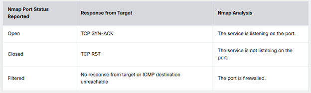
Figure 3-8 illustrates how a SYN scan works, and Example 3-19 shows the output of a SYN scan.
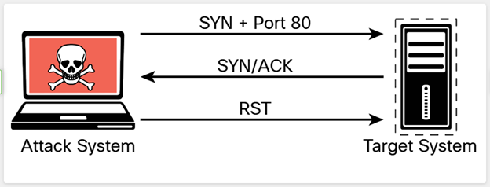
Example 3-19 — Nmap SYN Scan Sample Output
Example 3-19 shows how to run a TCP SYN scan using Nmap by specifying the -sS option against a host with the IP address 192.168.88.251. As you can see, this system has several ports open. In some situations, you will want to use the many different Nmap options in your scans to get the results you are looking for. The sections that follow look at some of the most common options and types of scans available in Nmap.
3.2.2 Nmap Scan Types
The following sections cover some of the most common Nmap scanning options used for specific scenarios, including the following:
- TCP Connect Scan (-sT)
- UDP Scan (-sU)
- TCP FIN Scan (-sF)
- Host Discovery Scan (-sn)
- Timing Options (-T 0-5)
TCP Connect Scan ( -sT )
A TCP connect scan actually makes use of the underlying operating system's networking mechanism to establish a full TCP connection with the target device being scanned. Because it creates a full connection, it creates more traffic (and thus takes more time to run). This is the default scan type that is used if no scan type is specified with the nmap command. However, it should typically be used only when a SYN scan is not an option, such as when a user who is running the nmap command does not have raw packet privileges on the operating system because many of the Nmap scan types rely on writing raw packets. This section illustrates how a TCP connect scan works and provides an example of a scan from a Kali Linux system. Table 3-3 defines the TCP connect scan responses.
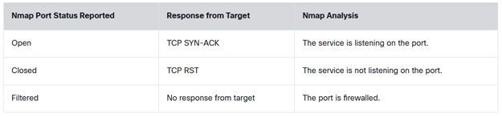
Figure 3-9 illustrates how a TCP connect scan works.
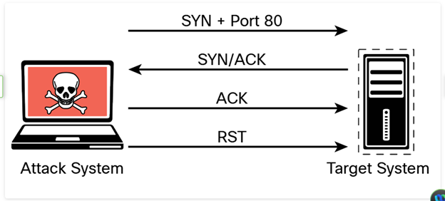
Example 3-20 shows the output of a full TCP connection scan.
Example 3-20 — Nmap TCP Connect Scan Sample Output
The output in Example 3-20 shows the results of an Nmap TCP connect scan. As you can see, the results indicate that a number of TCP ports are listening on the target device, and these results are very similar to the result shown in Example 3-19.
A full TCP connect scan requires the scanner to send an additional packet per scan, which increases the amount of noise on the network and may trigger alarms that a half-open scan wouldn't trigger. Security tools and the underlying targeted system are more likely to log a full TCP connection, and intrusion detection systems (IDSs) are similarly more likely to trigger alarms on several TCP connections from the same host.
Nmap scans only the 1000 most common ports for each protocol. You can specify additional ports to scan by using
the -p option. You can obtain additional information about the port specifications and scan order
from https://nmap.org/book/man-port-specification.html. Omar Santos has also created
an Nmap Cheat Sheet that includes all options and is available in his GitHub repository at
href="https://github.com/The-Art-of-Hacking/h4cker/blob/master/cheat_sheets/NMAP_cheat_sheet.md"
target="_blank">https://github.com/The-Art-of-Hacking/h4cker/blob/master/cheat_sheets/NMAP_cheat_sheet.md.
UDP Scan ( -sU )
The majority of the time, you will be scanning for TCP ports, as this is how you connect to most services running on target systems. However, you might encounter some instances in which you need to scan for UDP ports — for example, if you are trying to enumerate a DNS, SNMP, or DHCP server. These services all use UDP for communication between client and server. To scan UDP ports, Nmap sends a UDP packet to all ports specified in the command-line configuration. It waits to hear back from the target. If it receives an ICMP port unreachable message back from a target, that port is marked as closed. If it receives no response from the target UDP port, Nmap marks the port as open/filtered. Table 3-4 shows the UDP scan responses.
You should be aware that ICMP unreachable messages can sometimes be rate limited, and when they are, a UDP port scan can take much longer. ICMP rate limiting is primarily used for throttling worm or virus-like behavior and should normally be configured to allow 1% to 5% of available inbound bandwidth (at 10Mbps or 100Mbps speeds) or 100kbps to 10,000kbps (at 1Gbps or 10Gbps speeds) to be used for ICMP traffic.
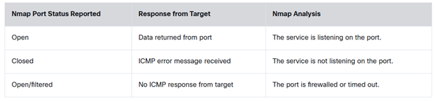
Figure 3-10 illustrates how a UDP scan works.
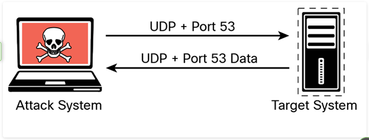
The output in Example 3-21 shows the results of an Nmap UDP scan on port 53 of the target 192.168.88.251. As you can see, the results indicate that this port is open.
Example 3-21 — Nmap UDP Scan Sample Output
TCP FIN Scan ( -sF )
There are times when a SYN scan might be picked up by a network filter or firewall. In such a case, you need to employ a different type of packet in a port scan. With the TCP FIN scan, a FIN packet is sent to a target port. If the port is actually closed, the target system sends back an RST packet. If nothing is received from the target port, you can consider the port open because the normal behavior would be to ignore the FIN packet. Table 3-5 shows the TCP FIN scan responses.
A TCP FIN scan is not useful when scanning Windows-based systems, as they respond with RST packets, regardless of the port state.
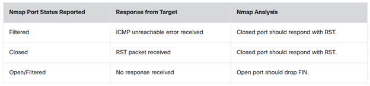
Figure 3-11 illustrates how a TCP FIN scan works.
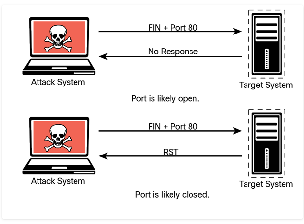
Example 3-22 shows the output of a TCP FIN scan against port 80 of the target. The output shows the results of an Nmap TCP FIN scan, specifying port 80 on the target. The response from the target indicates that the port is open/filtered.
Example 3-22 — Nmap TCP FIN Scan Sample Output
Host Discovery Scan ( -sn )
A host discovery scan is one of the most common types of scans used to enumerate hosts on a network because it can use different types of ICMP messages to determine whether a host is online and responding on a network.
The default for the -sn scan option is to send an ICMP echo request packet to the target, a TCP
SYN to port 443, a TCP ACK to port 80, and an ICMP timestamp request. This is documented at
href="https://nmap.org/book/man-host-discovery.html"
target="_blank">https://nmap.org/book/man-host-discovery.html. If the target responds to the
ICMP echo or the aforementioned packets, then it is considered alive.
Example 3-23 shows an example of a ping scan of the 192.168.88.0/24 subnet. This is a very basic host discovery scan that can be performed to determine what devices on a network are live. Such a scan for host discovery of an entire subnet is sometimes referred to as a ping sweep.
Example 3-23 — Nmap Host Discovery Scan
Timing Options ( -T 0-5 )
The Nmap scanner provides six timing templates that can be specified with the -T option and the template number (0 through 5) or name. Nmap timing templates enable you to dictate how aggressive a scan will be, while leaving Nmap to pick the exact timing values. These are the timing options:
- -T0 (Paranoid): Very slow, used for IDS evasion
- -T1 (Sneaky): Quite slow, used for IDS evasion
- -T2 (Polite): Slows down to consume less bandwidth, runs about 10 times slower than the default
- -T3 (Normal): Default, a dynamic timing model based on target responsiveness
- -T4 (Aggressive): Assumes a fast and reliable network and may overwhelm targets
- -T5 (Insane): Very aggressive; will likely overwhelm targets or miss open ports
Normal mode is the default Nmap mode. If you use this mode (by specifying -T3), you will not see any difference from a regular scan. You can find additional information about the Nmap timing options and performance at https://nmap.org/book/man-performance.html.
3.2.3 Practice — Nmap Scan Types
A cybersecurity technician is using the Nmap tool to perform a port scan using the command:
Which type of port scan is being used by the technician?
An attacker is using the Nmap tool to perform a port scan with the command:
What is the purpose of using option -T0?
3.2.4 Types of Enumeration
This section covers enumeration techniques that should be performed in the information-gathering phase of a penetration test. You will learn how and when these enumeration techniques should be used. This section also includes examples of performing these types of enumeration by using Nmap as well as a deep dive into packet crafting with Scapy.
- Host Enumeration
- User Enumeration
- Group Enumeration
- Network Share Enumeration
- Additional SMB Enumeration Examples
- Web Page Enumeration/Web Application Enumeration
- Service Enumeration
- Exploring Enumeration via Packet Crafting
Host Enumeration
The enumeration of hosts is one of the first tasks you need to perform in the information-gathering phase of a penetration test. Host enumeration is performed internally and externally. When performed externally, you typically want to limit the IP addresses you are scanning to just the ones that are part of the scope of the test. This reduces the chance of inadvertently scanning an IP address that you are not authorized to test. When performing an internal host enumeration, you typically scan the full subnet or subnets of IP addresses being used by the target. Host enumeration is usually performed using a tool such as Nmap or Masscan; however, vulnerability scanners also perform this task as part of their automated testing. Example 3-23, earlier in this module, shows a sample Nmap ping scan being used for host enumeration on the network 192.168.88.0/24. In earlier versions of Nmap, the Nmap ping scan option was -sP (not -sn).
User Enumeration
Gathering a valid list of users is the first step in cracking a set of credentials. When you have the username, you can then begin brute-force attempts to get the account password. You perform user enumeration when you have gained access to the internal network. On a Windows network, you can do this by manipulating the Server Message Block (SMB) protocol, which uses TCP port 445. Figure 3-12 illustrates how a typical SMB implementation works.
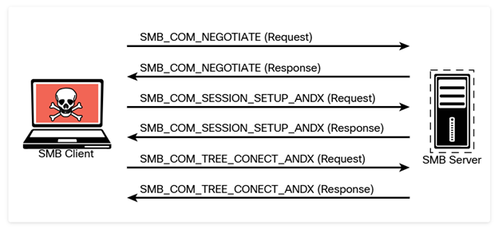
The information contained in the responses to these messages enables you to reveal information about the server:
- SMB_COM_NEGOTIATE: This message allows the client to tell the server what protocols, flags, and options it would like to use. The response from the server is also an SMB_COM_NEGOTIATE message. This response is relayed to the client about which protocols, flags, and options it prefers. This information can be configured on the server itself. A misconfiguration sometimes reveals information that you can use in penetration testing. For instance, the server might be configured to allow messages without signatures. You can determine if the server is using share- or user-level authentication mechanisms and whether the server allows plaintext passwords. The response from the server also provides additional information, such as the time and time zone the server is using. This is necessary information for many penetration testing tasks.
- SMB_COM_SESSION_SETUP_ANDX: After the client and server have negotiated the protocols, flags, and options they will use for communication, the authentication process begins. Authentication is the primary function of the SMB_COM_SESSION_SETUP_ANDX message. The information sent in this message includes the client username, password, and domain. If this information is not encrypted, it is easy to sniff it right off the network. Even if it is encrypted, if the mechanism being used is not sufficient, the information can be revealed using tools such as Lanman and NTLM in the case of Microsoft Windows implementations. The following example shows this message being used with the smb-enum-users.nse script:
Example 3-24 shows the results of the Nmap smb-enum-users script run against the target 192.168.88.251. As you can see, the results indicate that the script was able to enumerate the users who are configured on this Windows target. The highlighted line reveals the user who was enumerated by Nmap (derek).
Example 3-24 — Enumerating SMB Users
Group Enumeration
For a penetration tester, group enumeration is helpful in determining the authorization roles that are being used in the target environment. The Nmap NSE script for enumerating SMB groups is smb-enum-groups. This script attempts to pull a list of groups from a remote Windows machine. You can also reveal the list of users who are members of those groups. The syntax of the command is as follows:
Example 3-25 shows sample output of this command run against the Windows server at 192.168.56.3. This example uses known credentials to gather information.
Example 3-25 — Enumerating SMB Groups
The highlighted output in Example 3-25 shows the enumerated groups and users in the target host. In Windows, the relative identifier (RID) is a variable-length number assigned to objects and becomes part of the object's security identifier (SID) that uniquely identifies an account or a group within a domain. To learn more about the different RID numbers, see href="https://docs.microsoft.com/en-us/troubleshoot/windows-server/identity/security-identifiers-in-windows" target="_blank">https://docs.microsoft.com/en-us/troubleshoot/windows-server/identity/security-identifiers-in-windows.
Network Share Enumeration
Identifying systems on a network that are sharing files, folders, and printers is helpful in building out an attack surface of an internal network. The Nmap smb-enum-shares NSE script uses Microsoft Remote Procedure Call (MSRPC) for network share enumeration. The syntax of the Nmap smb-enum-shares.nse script is as follows:
Example 3-26 demonstrates the enumeration of SMB shares.
Example 3-26 — Enumerating SMB Shares
Additional SMB Enumeration Examples
The system used in earlier examples (with the IP address 192.168.88.251) is running Linux and Samba. However, it is not easy to determine that it is a Linux system from the results of previous scans. An easy way to perform additional enumeration and fingerprinting of the applications and operating system running on a host is by using the nmap -sC command. The -sC option runs the most common NSE scripts based on the ports found to be open on the target system.
You can locate the installed NSE scripts in Kali Linux and Parrot OS by simply using the locate
*.nse command. The site https://nmap.org/book/man-nse.html includes a detailed explanation of the NSE
and how to create new scripts using the Lua programming language.
Example 3-27 shows the output of the nmap -sC command launched against the Linux system at 192.168.88.251, which is running Samba.
Example 3-27 — Running the Nmap NSE Default Scripts
The highlighted lines in Example 3-27 show details about the Samba version that is running on the system (Samba Version 4.9.5). You can also see that even though the OS is marked as Windows 6.1, the correct operating system is Debian. Example 3-28 shows the output of the samba -V command at the target system (vulnhost-1), which confirms that the scanner was able to determine the correct Samba version.
Example 3-28 — Confirming Scan Results in the Target System
You can also use tools such as enum4linux to enumerate Samba shares, including user accounts, shares, and other configurations. Example 3-29 shows the output of the enum4linux tool after it is launched against the target system (192.168.88.251).
Example 3-29 — Enumerating Additional Information Using enum4linux
There is a Python-based enum4linux implementation called enum4linux-ng that can be downloaded from href="https://github.com/cddmp/enum4linux-ng" target="_blank">https://github.com/cddmp/enum4linux-ng.
Example 3-30 shows an example of SMB enumeration using enum4linux-ng.
Example 3-30 — Enumeration Using enum4linux-ng
The highlighted lines in Example 3-30 show the enumerated users, Samba version, and shared folders. You can also use simple tools such as smbclient to enumerate shares and other information from a system running SMB, as demonstrated in Example 3-31.
Example 3-31 — Enumeration Using smbclient
Web Page Enumeration/Web Application Enumeration
Once you have identified that a web server is running on a target host, the next step is to take a look at the web application and begin to map out the attack surface performing web page enumeration or often referred to as web application enumeration. You can map out the attack surface of a web application in a few different ways. The handy Nmap tool actually has an NSE script available for brute forcing the directory and file paths of web applications. Armed with a list of known files and directories used by common web applications, it probes the server for each of the items on the list. Based on the response from the server, it can determine whether those paths exist. This is handy for identifying things like the Apache or Tomcat default manager page that are commonly left on web servers and can be potential paths for exploitation. The syntax of the http-enum NSE script is as follows:
Example 3-32 displays the results of running this script against the host with the IP address 192.168.88.251.
Example 3-32 — Sample Nmap http-enum Script Output
The highlighted output in Example 3-32 shows several enumerated directories/folders and the version of the web server being used (Nginx 1.17.2). This is a good place to start in attacking a web application.
Another web server enumeration tool we should talk about is Nikto. Nikto is an open-source web vulnerability scanner that has been around for many years. It's not as robust as the commercial web vulnerability scanners; however, it is very handy for running a quick script to enumerate information about a web server and the applications it is hosting. Because of the speed at which Nikto works to scan a web server, it is very noisy. It provides a number of options for scanning, including the capability to authenticate to a web application that requires a username and password. Example 3-33 shows the output of a Nikto scan being run against the same host as in Example 3-32 (192.168.88.251). The output in Example 3-33 shows similar results to the Nmap script used in Example 3-32.
Example 3-33 — Sample Nikto Scan
No tool is perfect. It is recommended that you become familiar with the behavior and output of different tools. Module 10 covers several additional tools that can be used for enumeration and reconnaissance.
Service Enumeration
Service enumeration is the process of identifying the services running on a remote system, and it is a primary focus of what Nmap does as a port scanner. Earlier discussion in this module highlights the various scan types and how they can be used to bypass filters. When you are connected to a system that is on a directly connected network segment, you can run some additional scripts to enumerate further. A port scan takes the perspective of a credentialed remote user. The Nmap smb-enum-processes NSE script enumerates services on a Windows system, and it does so by using credentials of a user who has access to read the status of services that are running. This is a handy tool for remotely querying a Windows system to determine the exact list of services running. The syntax of the command is as follows:
Exploring Enumeration via Packet Crafting
When it comes to enumeration via packet crafting and generation, Scapy is one of pentesters' favorite tools and frameworks. Scapy is a very comprehensive Python-based framework or ecosystem for packet generation. This section looks at some of the simple ways you can use this tool to perform basic network reconnaissance.
Scapy must be run with root permissions to be able to modify packets.
Launching the Scapy interactive shell is as easy as typing sudo scapy from a terminal window, as illustrated in Figure 3-13.
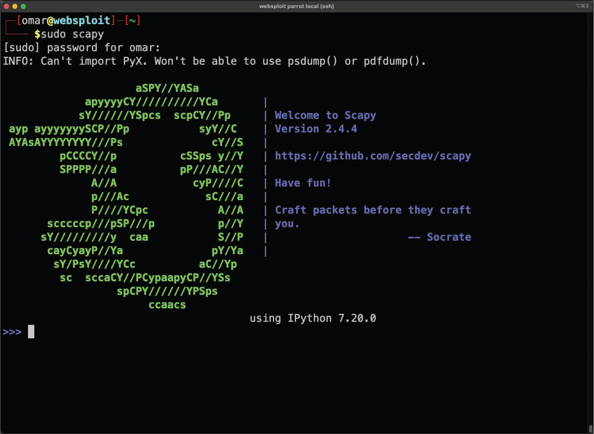
Example 3-34 shows how easy it is to begin crafting packets. In this example, a simple ICMP packet is crafted
with malicious_payload as the payload being sent to the destination host 192.168.88.251.
Example 3-34 — Crafting a Simple ICMP Packet Using Scapy
Example 3-35 shows the ICMP packet received by the target system (192.168.88.225/vulnhost-1). The tshark packet capture tool is used to capture the crafted ICMP packet.
Example 3-35 — Collecting a Crafted Packet by Using tshark
Scapy supports a large number of protocols. You can use the ls() function to list all available formats and protocols, as demonstrated in Example 3-36.
Example 3-36 — The Scapy ls() Function
You can use the ls() function to display all the options and fields of a specific protocol or packet format supported by Scapy, as shown in Example 3-37. This example shows the available fields for the TCP protocol.
Example 3-37 — Listing the TCP Layer 4 Fields in Scapy
Example 3-38 shows the DNS packet fields that can be modified by Scapy.
Example 3-38 — Listing the Available DNS Packet Fields in Scapy
You can use the explore() function to navigate the Scapy layers and protocols. After you execute the explore() function, the screen in Figure 3-14 is displayed.
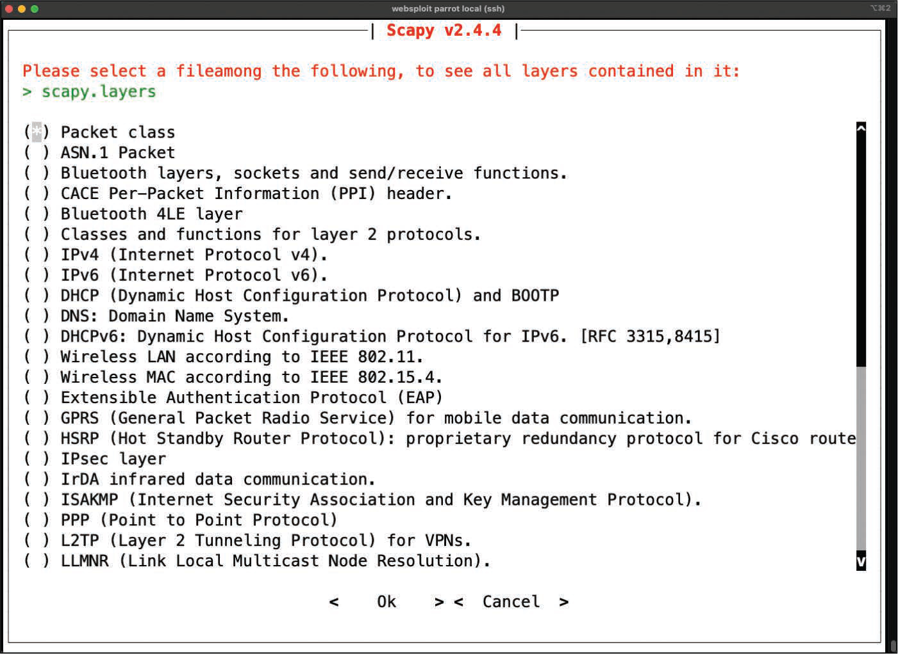
You can use the explore() function with any packet format or protocol. Example 3-39 shows the
packets contained in scapy.layers.dns using the explore("dns") function.
Example 3-39 — Using the explore("dns") Function to Display Packet Types in scapy.layers.dns
You can use Scapy as a scanner in many different ways. Omar Santos has several examples of Python scripts to perform network and system scanning using Scapy at his GitHub repository; see href="https://github.com/The-Art-of-Hacking/h4cker/blob/master/python_ruby_and_bash" target="_blank">https://github.com/The-Art-of-Hacking/h4cker/blob/master/python_ruby_and_bash. However, you can do a simple TCP SYN scan to any given port, as demonstrated in Example 3-40. In this example, a TCP port 445 SYN packet is sent to the host with the IP address 192.168.88.251. The output indicates that it received one answer, but it doesn't specify what the actual answer (response) was.
Example 3-40 — Sending a TCP SYN Packet Using Scapy
Example 3-41 shows the packet capture on the target host (192.168.88.251).
Example 3-41 — The Packet Capture of the TCP Packets on the Target Host
3.2.5 Practice — Exploring Enumeration via Packet Crafting with Scapy
Which tool can be used by an attacker to generate modified packets?
3.2.6 Lab — Enumeration with Nmap
Nmap is a classic active reconnaissance tool for pentesters. Every pentester should be familiar with it because it has unparalleled flexibility. Nmap is a command line tool and Zenmap is a GUI version of it. While Zenmap makes knowledge of the wide range of Nmap options less crucial, Zenmap cannot replace fluency at the Nmap command line.
We will begin doing active reconnaissance on our client's systems soon. Please practice your Nmap skills in this lab so you can fully participate as our team works on the Pixel Paradise engagement.
Practice Nmap enumeration techniques using a variety of scan types and options.
- Investigate Nmap
- Perform Basic Nmap Scans
Construct the nmap command that produced the following output:
3.2.7 Packet Inspection and Eavesdropping
As a penetration tester, you can use tools like Wireshark, tshark, and tcpdump to collect packet captures for packet inspection and eavesdropping. Anyone who has been involved with networking or security has at some point used these tools to capture and analyze traffic on a network. For a penetration tester, such tools can be convenient for performing passive reconnaissance. Of course, this type of reconnaissance requires either a physical or a wireless connection to the target. If you are concerned about being detected, you are probably better off attempting a wireless connection because it would not require you to be inside the building. Many times, a company's wireless footprint bleeds outside its physical walls. This gives a penetration tester an opportunity to potentially collect information about the target and possibly gain access to the network to sniff traffic. Module 5, "Exploiting Wired and Wireless Networks," covers this topic in depth.
3.2.8 Practice — Packet Inspection and Eavesdropping
Which tools can be used to perform passive reconnaissance? (Choose three.)
3.2.9 Lab — Packet Crafting with Scapy
Scapy lets you create and send packets that have the values that you want in the protocol data fields. For example, you can craft packets that have manipulated source and destination IP addresses, TCP flags and port numbers, and many other values that you specify. We use it all the time at Protego.
Work through this lab to learn Scapy basics. You can then help us out with our active reconnaissance of Pixel Paradise.
Use Scapy, a Python-based packet manipulation tool, to craft custom packets for reconnaissance on a target system.
- Part 1: Investigate the Scapy Tool
- Part 2: Use Scapy to Sniff Network Traffic
- Part 3: Create and Send an ICMP Packet
- Part 4: Create and Send TCP SYN Packets
You want to send a packet to the well-known HTTP port on host 192.168.99.17 with the TCP SYN flag set. What options will you use with the Scapy send() function to craft this packet? (Choose three.)
3.2.10 Lab — Network Sniffing with Wireshark
Wireshark and tcpdump are indispensable tools for capturing traffic on a network. They enable detailed inspection of network traffic including passwords, hashes, files, and entire threaded packet exchanges. Wireshark uses a GUI for packet captures, while tcpdump is a command-line tool. You really need to know both of them to work at Protego.
Get familiar with tcpdump and Wireshark in the lab. Practice your skills so that you can help us out with the Pixel Paradise engagement.
Use the Linux utility tcpdump to capture and save network traffic, then use Wireshark to investigate the capture.
- Prepare the host to capture network traffic
- Capture and save network traffic
- View and analyze the packet capture
Video — Network Sniffing with Wireshark Demonstration
What will this tcpdump statement do?
3.3 Understanding the Art of Performing Vulnerability Scans
3.3.1 Overview
Now that we have discovered network assets, we need to uncover any vulnerabilities that might exist in them. To do this, we will use the vulnerability scanning features of Nmap and other vulnerability assessment tools. We are testing not for vulnerabilities in web applications, that is very important and will be covered later. Instead, we are looking for host-based vulnerabilities related to the operating systems and services that are running on the devices.
Once you have identified the target hosts that are available and the services that are listening on those hosts, you can begin to probe those services to determine if there are any weaknesses; this is what vulnerability scanners do. Vulnerability scanners use a number of different methods to determine whether a service is vulnerable. The primary method is to identify the version of the software that is running on the open service and try to match it with an already known vulnerability. For instance, if a vulnerability scanner determines that a Linux server is running an outdated version of the Apache web server that is vulnerable to remote exploitation, it reports that vulnerability as a finding.
Of course, the main concern with automated vulnerability scanners is false positives; the output from a vulnerability scan may be useless if no validation is done on the findings. Turning over a report full of false positives to a developer or an administrator who is then responsible for fixing the issues can really cause conflicts. You don't want someone chasing down findings in your report just to find out that they are false positives.
3.3.2 How a Typical Automated Vulnerability Scanner Works
Now let's take a look at how typical vulnerability scanners work (see Figure 3-15). They are all different in some ways, but most of them follow a similar process:
Step 1. In the discovery phase, the scanner uses a tool such as Nmap to perform host and port enumeration. Using the results of the host and port enumeration, the scanner begins to probe open ports for more information.
Step 2. When the scanner has enough information about the open port to determine what software and version are running on that port, it records that information in a database for further analysis. The scanner can use various methods to make this determination, including using banner information.
Step 3. The scanner tries to determine if the software that is listening on the target system is susceptible to any known vulnerabilities. It does this by correlating a database of known vulnerabilities against the information recorded in the database about the target services.
Step 4. The scanner produces a report on what it suspects could be vulnerable. Keep in mind that these results are often false positives and need to be validated. At the very least, this type of tool gives you an idea of where to look for vulnerabilities that might be exploitable.
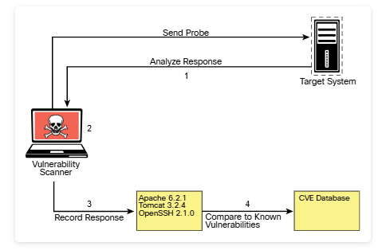
Common vulnerability scan types include:
- Authenticated Scans
- Discovery Scans
- Full Scans
- Stealth Scans
- Compliance Scans
Unauthenticated Scans
By default, vulnerability scanners do not use credentials to scan a target. If you provide only the IP address of the target and click Scan, the tool will begin enumerating the host from the perspective of an unauthenticated remote attacker. An unauthenticated scan shows only the network services that are exposed to the network. The scanner attempts to enumerate the ports open on the target host. If the service is not listening on the network segment that the scanner is connected to, or if it is firewalled, the scanner will report the port as closed and move on. However, this does not mean that there is not a vulnerability. Sometimes it is possible to access ports that are not exposed to the network via SSH port forwarding and other tricks. It is still important to run a credentialed (or authenticated) scan when possible.
Authenticated scans may provide a lower rate of false positives than unauthenticated scans.
Authenticated Scans
In some cases, it is best to run an authenticated scan against a target to get a full picture of the attack surface. An authenticated scan requires you to provide the scanner with a set of credentials that have root-level access to the system. The scanner actually logs in to the target via SSH or some other mechanism. It then runs commands like netstat to gather information from inside the host. Many of the commands that the scanner runs require root-level access to be able to gather the correct information from the system.
Example 3-42 shows the netstat command run by a non-privileged user (omar); Example 3-43 shows the netstat command run by a root user. You can see that the output is different for the different user-level permissions. Specifically, notice that when running as the user omar, the PID/program name is not available, and when running as the user root, that information is displayed.
Example 3-42 — Netstat Example Without Root-Level Access
Example 3-43 shows the details about the process and program name associated with the opened port.
Example 3-43 — Netstat Example with Root-Level Access
Discovery Scans
A discovery scan is primarily meant to identify the attack surface of a target. A port scan is a major part of what a discovery scan performs. A scanner may actually use a tool like Nmap to perform the port scan process. It then pulls the results of the port scan into its database to use that information for further discovery. For instance, the result of the port scan might come back showing that ports 80, 22, and 443 are open and listening. From there, the scanning tool probes those ports to identify exactly what service is running on each port. For example, say that it identifies that an Apache Tomcat 8.5.22 web server is running on ports 80 and 443. Knowing that a web server is running on the ports, the scanner can then perform further discovery tasks that are specific to web servers and applications. Now say that, at the same time, the scanner identifies that OpenSSH is listening on port 22. From there, the scanner can probe the SSH service to identify information about its configuration and capabilities, such as preferred and supported cryptographic algorithms. This type of information is useful for identifying vulnerabilities in later phases of testing.
Full Scans
As mentioned previously, a full scan typically involves enabling every scanning option in the scan policy. The options vary based on the scanner, but most vulnerability scanners have their categories of options defined similarly. For instance, they are typically organized by operating system, device manufacturer, device type, protocol, compliance, and type of attack, and the rest of the options might fall into a miscellaneous category. Example 3-44 shows a sample list of the plugin categories from the Nessus vulnerability scanner. As you can see from this list, there are a lot of plugins available for the scanner to run. It should also be obvious, based on the names of the plugin categories, that there will never be a single device that all of these plugins apply to. For instance, plugins for a macOS device would not be applicable to a Windows device. That is why you normally need to customize your plugin selection to reflect the environment that you are scanning. Doing so will reduce unnecessary traffic and speed up your scanning process.
Example 3-44 — Examples of Plugin Categories from Nessus
Stealth Scans
There are sometimes situations in which you must scan an environment that is in a production state. In such situations, there is typically a requirement for running a scan without alerting the defensive position of the environment; such a scan is called a stealth scan. In this case, you will want to implement a vulnerability scanner in a manner that makes the target less likely to detect the activity. Vulnerability scanners are pretty noisy; however, there are some options you can configure to make a scan quieter. For example, as discussed earlier in this module, there are different types of Nmap scans, and they can be detected by network intrusion prevention systems (IPSs) or host firewalls. You have learned that a SYN scan is a fairly stealthy type of scan to run. This same concept applies to vulnerability scanners because they all use some kind of port scanner to enumerate the target. These same options are available in the vulnerability scanner's configuration. You can also disable any plugins/attacks that might be especially likely to generate noisy traffic, such as any that perform denial-of-service attacks, which would definitely arouse some concerns on the target network.
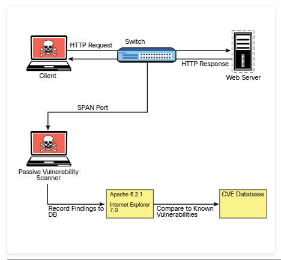
Aside from the modifications to a traditional vulnerability scanner just described, there is also the concept of a passive vulnerability scanner. A passive vulnerability scanner monitors and analyzes the network traffic. Based on the traffic it sees, it can determine what the topology of the network consists of and what service the hosts on the network are listening on. From the detailed information about the traffic at the packet layer, a passive vulnerability scanner can determine if any of those services or even clients have vulnerabilities. For instance, if a Windows client with an outdated version of Internet Explorer is connecting to an Apache web server that is also outdated, the scanner will identify the versions of the client and server from the monitored traffic. It can then compare those versions to its database of known vulnerabilities and report the findings based on only the passive monitoring it performed. Figure 3-16 illustrates how this type of scanner typically works.
Compliance Scans
Compliance scans are network and application tests (scans) typically driven by the market or governance that the environment serves and regulatory compliance. An example of this would be the information security environment for a healthcare entity, which must adhere to the requirements set forth by the Health Insurance Portability and Accountability Act (HIPAA). This is where a vulnerability scanner comes into play. It is possible to use a vulnerability scanner to address the specific requirements that a policy requires. Vulnerability scanners often have the capability to import a compliance policy file. This policy file can typically map to specific plugins/attacks that the scanner is able to perform. Once the policy is imported, the specific set of compliance checks can be run against a target system.
The challenge with compliance requirements is that there are many different types for different industries and government agencies, and they can all be interpreted in various ways. Some of the checks might be straightforward. If a requirement check is looking for a specific command to be run and that the output be a 1 instead of a 0, that is very simple for a vulnerability scanner to determine; however, many requirements leave more to be interpreted. This makes it very difficult for a tool like a vulnerability scanner to make a determination. Most vulnerability scanners also have the capability to create custom compliance policies. This is a valuable option for penetration testers, who typically want to fine-tune the scanner policy for each engagement.
3.3.6 Lab — Vulnerability Scanning with Kali Tools
We're completing reconnaissance and now want to catalog the vulnerabilities that are found on various systems, networks, and applications. Vulnerability scanners link discovered vulnerabilities with public vulnerability info, such as CVE numbers. From there, you can uncover details about the vulnerabilities and explore means of exploiting them for the next phase of the penetration test.
Practice with some different approaches to scanning for vulnerabilities before we get started with our scans of Pixel Perfect's resources.
Explore network vulnerability scanning tools and use them to perform a vulnerability scan on a target host.
- Perform network scans with Nmap
- Use Greenbone Vulnerability Management to perform a vulnerability scan
Which statements describe the output from the command shown? (Choose three.)
Line numbers in bracket [ ] were added for the purposes of the question.
3.3.7 Challenges to Consider When Running a Vulnerability Scan
The previous sections have touched on a number of different things that should factor into how you perform your scanning. The sections that follow go into further detail about some of the specific things you should consider when building a scanning policy and actually performing scans. For more information, select each of the following challenges to consider.
Considering the Best Time to Run a Scan
The timing of when to run a scan is typically of most concern when you are scanning a production network. If you are scanning a device in a lab environment, there is normally not much concern because a lab environment is not being used by critical applications. There are a few reasons running a scan on a production network should be done carefully. First, the network traffic that is being generated by a vulnerability scan can and will cause a lot of noise on the network. It can also cause significant congestion, especially when your scans are traversing multiple network hops. (We talk about this further shortly.)
Another consideration in choosing a time to run a scan is the fact that many of the options or plugins that are performed in a vulnerability scan can and will crash the target device as well as the network infrastructure. For this reason, you should be sure that when scanning on a production network, you are scanning at times that will have the least possible impact on end users and servers. Most of the time, scanning in the early hours of the day, when no one is using a network for critical purposes, is best.
Determining What Protocols Are in Use
One of the first things you need to know about a network or target device before you begin running vulnerability scans is what protocols are being used. If a target device is using both TCP and UDP protocols for services that are running, and you only run a vulnerability scan against TCP ports, then you are going to miss any vulnerabilities that might be found on the UDP services.
Network Topology
As mentioned previously, the network topology should always be considered when it comes to vulnerability scanning. Of course, scanning across a WAN connection is never recommended because it would significantly impact any of the devices along the path. The rule of thumb when determining where in the network topology to run a vulnerability scan is that it should always be performed as close to the target as possible. For example, if you are scanning a Windows server that is sitting inside your screened subnet (formerly known as the demilitarized zone, or DMZ), the best location for your vulnerability scanner is adjacent to the server on the screened subnet. By placing it there, you can eliminate any concerns about impacting devices that your scanner traffic is traversing.
Aside from the impact on the network infrastructure, another concern is that any device that you traverse could also affect the results of your scanner. This is mostly a concern when traversing a firewall device; in addition, other network infrastructure devices could possibly impact the results as well.
Bandwidth Limitations
Let's take a moment to consider the effects of bandwidth limitations on vulnerability scanning. Obviously, any time you flood a network with a bunch of traffic, it is going to cause an issue with the amount of bandwidth that is available. As a penetration testing professional, you need to be cognizant of how you are affecting the bandwidth of the networks or systems you are scanning. Specifically, depending on the amount of bandwidth you have between the scanner and the target, you might need to adjust your scanner settings to accommodate lower-bandwidth situations. If you are scanning across a VPN or WAN link that most likely has limited bandwidth, you will want to adjust your scanning options so that you are not causing bandwidth consumption issues. The settings that need to be adjusted are typically those related to flooding and denial-of-service (DoS) type attacks.
Query Throttling
To work around the issue of bandwidth limitations and vulnerability scanning, slowing down the traffic created by your scanner can often help. This is often referred to as query throttling, and it can typically be achieved by modifying the options of the scanning policy. One way to do this is to reduce the number of attack threads that are being sent to the target at the same time. There isn't a specific rule of thumb for the number of threads. It really depends on the robustness of the target. Some targets are more fragile than others. Another way to accomplish this is to reduce the scope of the plugins/attacks that the scanner is checking for. If you know that the target device is a Linux server, you can disable the attacks for other operating systems, such as Windows. Even though the attacks won't work against the Linux server, it still needs to receive and respond to the traffic. This additional traffic can cause a bottleneck in processing and network traffic consumption. Limiting the number of requests that the target would need to respond to would reduce the risk of causing issues such as crashing on the target and result in a more successful scan.
Fragile Systems/Nontraditional Assets
When using a vulnerability scanner against your internal network, you must take into consideration the devices on the network that might not be able to stand up to the traffic that is hurled at them by a vulnerability scanner. For these systems, you might need to either adjust the scanning options to reduce the risk of crashing the devices or completely exempt the specific devices from being scanned. Unfortunately, by exempting the specific devices, you reduce the overall security of the environment.
Printers are often considered "fragile systems." Historically, they have been devices that have not been able to withstand vulnerability scanning attempts. With the surge in IoT devices, today there are many more devices that may be considered fragile, and you need to consider them when planning for vulnerability scanning. The typical way to address fragile devices is to exempt them from a scan; however, these devices can pose a risk to the environment and do need to be scanned. To address this issue, you can "throttle" the scan frequency as well as the options used in the scan policy to reduce the likelihood of crashing the device.
The time to run scans may also be dictated by the person or company that hired you to perform the penetration test. In some cases, you may not be allowed to perform scanning during business hours.
3.4 Understanding How to Analyze Vulnerability Scan Results
3.4.1 Overview
Reconnaissance is important for understanding our client's assets and attack surface. However, reconnaissance does not necessarily identify actual vulnerabilities. We may know the platforms and services that are reachable by threat actors, but are there known vulnerabilities in those platforms and services?
Vulnerability scans offer an automated way of linking scan information to details of vulnerabilities that exist for the scan results. With this information, it is possible to craft exploits that can lead to serious consequences such as data breaches and service disruptions. With a collection of these vulnerabilities, we can move forward to actual penetration of the network and assessment of risks that such exploits pose to Pixel Paradise.
As you might already know, running a vulnerability scan is really the easy part of the information gathering and vulnerability identification process. The majority of the work goes into analyzing the results you obtain from the tools you use for vulnerability scanning. These tools are not foolproof; they can provide false positives, and the false positives need to be sorted out to determine what the actual vulnerabilities are.
For example, say that you are part of an information security team doing internal vulnerability scans on your network. You run your vulnerability scanning tool of choice and then export a report of the findings from the scan. Next, you turn over the report to the endpoint team to address all the issues noted in the report. The endpoint team begins to address the issues one by one. Its process would likely include an investigation of an endpoint to determine how to best mitigate a finding about it. If the report that you provide includes false positives, the endpoint team will end up wasting a lot of time chasing down issues that don't actually exist. This can obviously cause some problems between the security team and the endpoint team. This scenario can also be applied to other situations.
When you are providing a report as a deliverable of a paid penetration testing assignment, it is especially important that the report be accurate. Say that you have been hired to identify vulnerabilities on a customer's network. Your deliverable is to provide a full report of security issues that need to be addressed to protect the customer's environment. Turning over a report that includes false positives will waste your customer's time and will likely result in your losing the customer's repeat business. As you can see from this discussion, reducing the false positives in vulnerability scans is very important.
So how do you go about eliminating false positives? The process involves a detailed and thorough look into the results that your vulnerability scanning tool has provided. Suppose that the results of a scan reveal that there is a possible remote code execution vulnerability in the Apache web server that is running on the target server. This type of finding is likely to be flagged as a high-severity vulnerability, and it should therefore be prioritized. To determine if this is a valid finding, you would first want to take a look at what the vulnerability scanner did to come to this conclusion. Did it pull the version information directly from the system by using a credentialed scan, or was it determined by remotely connecting to the port? As you know, the results of a credentialed scan are more likely than remote analysis to be valid.
Because the method of harvesting version information varies based on the scanner and the service, you should be able to take a look at the details of the findings in a report to determine how the information was gathered. From there, if possible, you would want to connect directly to the target that is reporting a particular vulnerability and try to manually determine the version information of that service. Once you validate that the version reported by the scanner does actually match what is on the system, you also need to dig deeper into the details of the vulnerability. Each vulnerability will typically map to one or many items in the Common Vulnerabilities and Exposures (CVE) list. You need to take a look at the particulars of those CVE items to understand the criteria because a vulnerability may be flagged based on only one piece of information (such as the version number of the Apache server pulled from the banner). When you dig into the CVE details, you might find that for the vulnerability to be exploitable, this version of Apache must be running on a specific version or distribution of Linux. Most vulnerability scanners are able to correlate multiple pieces of information to make the determination. However, some Linux operating systems, such as Red Hat, report an older version of a service that has actually been patched for the specific vulnerability. This is called backporting. So, as you can see, there is more to it than just running a scan. Of course, the number-one method of validating a finding from a vulnerability scan is to exploit the vulnerability, as discussed in many of the upcoming modules.
3.4.2 Sources for Further Investigation of Vulnerabilities
The following sections describe some helpful sources for further investigation of vulnerabilities that you might find during your scans.
US-CERT
The U.S. Computer Emergency Readiness Team (US-CERT) was established to protect the Internet infrastructure of the United States. The main goal of US-CERT is to work with public- and private-sector agencies to increase the efficiency of vulnerability data sharing. The work done by US-CERT is meant to improve the nation's cybersecurity posture. US-CERT operates as an entity under the Department of Homeland Security as part of the National Cybersecurity and Communications Integration Center (NCCIC). You can access US-CERT resources by visiting href="https://www.us-cert.gov/" target="_blank">https://www.us-cert.gov.
The CERT Division of Carnegie Mellon University
The CERT Division of the Software Engineering Institute of Carnegie Mellon University is a cybersecurity center whose experts help coordinate vulnerability disclosures across the industry. CERT researches security vulnerabilities and contributes to many different cybersecurity efforts in the industry. CERT also develops and delivers training to many organizations to help them improve their cybersecurity practices and programs. You can obtain additional information about CERT at https://cert.org.
NIST
The National Institute of Standards and Technology (NIST) is an agency of the U.S. Department of Commerce. Its core focus is to promote innovation and industrial competitiveness. NIST is responsible for the creation of the NIST Cybersecurity Framework (NIST CSF; see https://www.nist.gov/cyberframework). This framework includes a policy on computer security guidance. Version 1 of the NIST framework was published in 2014 for the purpose of guiding the security of critical infrastructure; however, it is commonly used by private industry for guidance in risk management. In 2018, NIST released version 1.1, which is designed to assist organizations in assessing the risks they encounter. In general, the framework outlines the standards and industry best practices that can be used to improve organizations' cybersecurity posture. Anyone who is responsible for making decisions related to cybersecurity in an organization should consult this framework for guidance on standards and best practices.
JPCERT
Similar to the US-CERT, the Japan Computer Emergency Response Team (JPCERT) is an organization that works with service providers, security vendors, and private-sector and government agencies to provide incident response capabilities, increase cybersecurity awareness, conduct research and analysis of security incidents, and work with other international CERT teams. The JPCERT is responsible for Computer Security Incident Response Team (CSIRT) activities in the Japanese and Asia Pacific region. You can access JP-CERT resources by visiting href="https://www.jpcert.or.jp/english/" target="_blank">https://www.jpcert.or.jp/english/.
CAPEC
The Common Attack Pattern Enumeration and Classification (CAPEC) is a community-driven effort to catalog the attack patterns seen in the wild so that they can be used to more efficiently identify active threats. CAPEC, which is maintained by MITRE, acts as a dictionary of known attacks that have been seen in the real world.
CVE
Common Vulnerabilities and Exposures (CVE) is an effort that reaches across international cybersecurity communities. It was created in 1999 with the idea of consolidating cybersecurity tools and databases. A CVE ID is composed of the letters CVE followed by the year of publication and four or more digits in the sequence number portion of the ID (for example, CVE-YYYY-NNNN with four digits in the sequence number, CVE-YYYY-NNNNN with five digits in the sequence number, CVE-YYYY-NNNNNNN with seven digits in the sequence number, and so on). You can obtain additional information about CVE at https://cve.mitre.org.
CWE
Common Weakness Enumeration (CWE), at a high level, is a list of software weaknesses. The purpose of CWE is to create a common language to describe software security weaknesses that are the root causes of given vulnerabilities. CWE provides a common baseline for weakness identification to aid the mitigation process. You can obtain additional information about CWE at MITRE's site: https://cwe.mitre.org.
CVSS
Each vulnerability represents a potential risk that threat actors can use to compromise your systems and your network. Each vulnerability carries an associated amount of risk. One of the most widely adopted standards for calculating the severity of a given vulnerability is the Common Vulnerability Scoring System (CVSS), which has three components: base, temporal, and environmental scores. Each component is presented as a score on a scale from 0 to 10.
CVSS is an industry standard maintained by the Forum of Incident Response and Security Teams (FIRST) that is used by many Product Security Incident Response Teams (PSIRTs) to convey information about the severity of vulnerabilities they disclose to their customers. In CVSS, a vulnerability is evaluated according to three aspects, with a score assigned to each of them:
The base group represents the intrinsic characteristics of a vulnerability that are constant over time and do not depend on a user-specific environment. This is the most important information and the only aspect that's mandatory to obtain a vulnerability score. The temporal group assesses the vulnerability as it changes over time. The environmental group represents the characteristics of a vulnerability, taking into account the organizational environment.
The score for the base group is between 0 and 10, where 0 is the least severe and 10 is assigned to highly critical vulnerabilities. For example, a highly critical vulnerability could allow an attacker to remotely compromise a system and get full control. In addition, the score comes in the form of a vector string that identifies each of the components used to make up the score. The formula used to obtain the score takes into account various characteristics of the vulnerability and how the attacker is able to leverage these characteristics.
CVSS defines several characteristics for the base, temporal, and environmental groups. The base group defines Exploitability metrics that measure how the vulnerability can be exploited, as well as Impact metrics that measure the impact on confidentiality, integrity, and availability. In addition to these two metrics, a metric called Scope Change (S) is used to convey the impact on other systems that may be impacted by the vulnerability but do not contain the vulnerable code. For instance, if a router is susceptible to a DoS vulnerability and experiences a crash after receiving a crafted packet from the attacker, the scope is changed, since the devices behind the router will also experience the denial-of-service condition. FIRST provides additional examples at href="https://www.first.org/cvss/" target="_blank">https://www.first.org/cvss/.
3.4.3 Lab — Investigate Vulnerability Information Sources
A lot of work has been done to create a universal way of sharing information about known cybersecurity vulnerabilities. Vulnerability scanning tools map scan results to relevant vulnerabilities in the form of CVE numbers, so it is important to know what the CVE numbers represent and how to find out details regarding their severity and affected systems and software versions.
Please review the information in this lab to ensure that you are clear on the differences between sources of vulnerability information and how to use them.
Use multiple helpful sources to further investigate vulnerabilities.
- Part 1: Investigate Common Vulnerabilities and Exposures (CVEs)
- Part 2: Explore Common Weakness Enumerations (CWEs)
- Part 3: Investigate National Institute of Standards and Technology (NIST) Vulnerability Resources
- Part 4: Research Vulnerabilities in the Common Vulnerability Scoring System (CVSS)
What is a summary of vulnerability CVE-2019-6111?
3.4.4 How to Deal with a Vulnerability
As a penetration tester, your goal is to identify weaknesses that can be exploited. As previously discussed, vulnerability scanning is a method of identifying potential exploits. After you identify a vulnerability, you need to verify it. There are many ways to determine if a vulnerability scanner's findings are valid. The ultimate validation is exploitation.
To determine if a vulnerability is exploitable, you need to first identify an exploit for a vulnerability. Suppose your vulnerability scanner reports that there is an outdated version of Apache Struts that is vulnerable to a remotely exploitable unauthenticated defect. One of the first things you would want to do is to determine if there is a readily available exploit. Many times, this can be found with an exploitation framework such as Metasploit. As a general rule, if a vulnerability has a matching module in Metasploit, it should almost always be considered high severity. That being said, there are also other methods for finding exploits, and you can always write your own exploits.
How do you prioritize your findings for the next phase of your penetration test? To determine the priority, you need to answer a few questions:
- What is the severity of the vulnerability?
- How many systems does the vulnerability apply to?
- How was the vulnerability detected?
- Was the vulnerability found with an automated scanner or manually?
- What is the value of the device on which the vulnerability was found?
- Is this device critical to your business or infrastructure?
- What is the attack vector, and does it apply to your environment?
- Is there a possible workaround or mitigation available?
Answering these questions can help you determine the priority you should assign to the vulnerabilities found. Standard protocol would have you start with the highest-severity vulnerabilities that have the greatest likelihood of being exploited. If these vulnerabilities are actually valid, they might already be compromised. (If at any time during a penetration test, you find that a system is being actively exploited, you should report it right away to the system owner.) Next, you should address any vulnerabilities that are on critical systems, regardless of the severity level. It is possible that there might be an exploit chain available to an attacker that would allow a lower-severity vulnerability to become critical. You need to protect critical systems first. Next, you might want to prioritize based on how many systems are affected by the finding. If a large number of systems are affected, then this would raise the priority because many exploits on this vulnerability would have a higher impact on your environment. These are suggested guidelines, but when it comes to prioritization of vulnerability management and mitigation, it really depends on the specific environment.